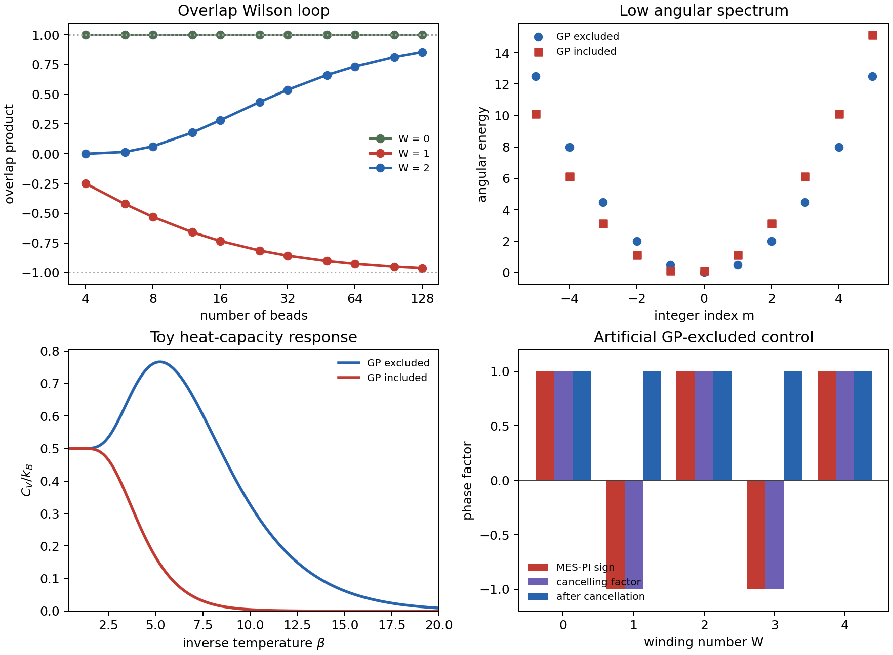

Literature Close Reading
MES-PIMD and the Geometric Phase
Zhai, Shang, and Liu's perspective makes a precise point that is easy to blur: ordinary single-surface BO-PIMD does not contain the molecular geometric phase, but the imaginary-time multi-electronic-state path-integral formulation does. The difference is not in the adiabatic potential energy surface. It is in the electronic overlap accumulated along the closed ring polymer. That overlap product is the imaginary-time analogue of a Wilson loop, and it records whether the nuclear path winds around a conical intersection.[1],[2]
The Paper's Main Conclusions
- Geometric phase effects can significantly change low-temperature thermodynamic properties, not only spectra and real-time dynamics.
- In the Jahn-Teller benchmark, GP-included and GP-excluded calculations share the same adiabatic potential surfaces, but their kinetic operators and boundary conditions differ.
- The GP-included Jahn-Teller ground state is doubly degenerate, while the artificial GP-excluded ground state is non-degenerate.
- The low-lying spectrum difference produces a visible heat-capacity difference, especially at large inverse temperature \(\beta\).
- MES-PI naturally includes the GP through the electronic trace of a product of statistically weighted overlap matrices between adjacent imaginary-time beads.
- A winding-number phase factor can be used to build an artificial GP-excluded MES-PI control, allowing the authors to isolate the purely topological contribution from other nonadiabatic effects.
- Ring-polymer winding sectors are not rare in the low-temperature benchmark: for the \(c=1\), \(\beta=8\) case, odd-winding paths occupy a substantial fraction of the sampled ensemble.
- Small bead counts can be qualitatively misleading. \(N_{\mathrm{bead}}=1\) is the classical-nuclei limit, and \(N_{\mathrm{bead}}=2\) cannot resolve a true winding around the CI.
- The brute-force GP-excluded winding correction converges slowly with bead number, while the paper's GPA-SP strategy improves the convergence behavior.
- Single-electronic-state schemes can work in a low-temperature, large-gap limit, but the full MES formulation is needed when the excited-state gap is not large enough.
Logic Chain I: The Jahn-Teller Topology
The model used to expose the topology is the two-state linear Jahn-Teller \(E\otimes e\) Hamiltonian. In reduced units, a common diabatic potential matrix can be written as
Diagonalizing this matrix gives the adiabatic potential energy surfaces
The conical intersection is at \(r=0\), and the lower surface has the Mexican-hat trough at \(r=c\). A real lower-state eigenvector may be written with a half-angle dependence,
Therefore a loop around the CI gives
This sign change is the molecular geometric phase. The potential eigenvalue \(\Lambda_-(r)\) is unchanged by that sign, but the kinetic energy is not. Nuclear derivatives act on both the nuclear amplitude and the coordinate-dependent electronic basis. Once the adiabatic basis twists around the CI, the kinetic operator must either carry the Berry vector potential or impose the compensating antiperiodic nuclear boundary condition.
Logic Chain II: Why the Spectrum Changes
The simplest fixed-radius reduction is a pseudorotor around the trough. If the GP is ignored, the angular wavefunction is periodic:
If the GP is retained, the electronic factor changes sign after one loop, so the nuclear factor must compensate:
Equivalently, angular momentum is shifted by one half:
This explains the qualitative spectral benchmark. Without the GP, the lowest angular state is \(m=0\), non-degenerate. With the GP, the lowest angular choices \(m=0\) and \(m=-1\) correspond to angular momenta \(+1/2\) and \(-1/2\), giving a doublet. The paper's full two-dimensional basis-set calculation contains radial structure and the exact kinetic terms, but the half-integer pseudorotor is the cleanest explanation for the ground-state degeneracy.
Logic Chain III: Why Heat Capacity Sees It
Thermodynamic observables are spectral sums. The partition function is
and the heat capacity can be written as
At low temperature, large \(\beta\) suppresses high-energy states. The result is controlled by the ground level, its degeneracy, and the first few excitation gaps. Therefore a topological shift in angular quantization can change \(C_V\) even though the plotted adiabatic surface is identical. In the paper's figures, the artificial GP-excluded Hamiltonian produces a low-temperature heat-capacity feature that is absent or strongly reduced in the GP-included result. That feature is not a new potential well. It is a spectral artifact of removing the topological boundary condition.
Logic Chain IV: MES-PI Contains the GP
The imaginary-time multi-electronic-state path integral writes the partition function as a ring-polymer integral over nuclear bead positions \(R^{[j]}\), with an electronic trace:
Here
is the electronic overlap matrix between adjacent imaginary-time slices. In a single-state limit, the overlap product becomes
This is precisely the Berry phase for the closed imaginary-time path. If the path winds once around a CI, the product gives \(-1\); if it winds twice, it gives \(+1\). More generally, for the single-CI two-state Jahn-Teller model,
where \(W\) is the winding number of the ring polymer around the CI. This is why MES-PI can contain the GP even when the electronic eigenvectors obtained by diagonalization are real-valued and discontinuous across a branch cut. The phase information is not reconstructed by differentiating the eigenvectors; it is carried by their finite overlaps.

The script used for this diagnostic is available at assets/code/jt/mes_pi_gp_logic_demo.py. It also writes mes-pi-gp-logic-wilson.csv and mes-pi-gp-logic-thermo.csv.
Logic Chain V: How the Paper Isolates the GP
A raw comparison between different methods can mix several effects: nonadiabatic transitions, DBOC-like kinetic terms, finite-bead errors, and topology. To isolate only the topology, the paper constructs an artificial GP-excluded MES-PI. For multiple CIs, it introduces a geometric signature matrix \(\eta_\alpha\) and a winding number \(W_\alpha\) for each CI. The corresponding phase factor is
For the single-CI two-state Jahn-Teller model, this reduces to
Multiplying the MES-PI expression by this factor cancels the \((-1)^W\) already present in the overlap product. The resulting expression is not meant as the physical simulation. It is a deliberately artificial control: it answers the question, "What would the thermodynamics look like if the same PES and nonadiabatic framework were used but the GP sign were removed?"
Numerical Findings
The paper's exact basis-set calculations and MES-PIMD simulations support the following conclusions.
| Observation | Interpretation |
|---|---|
| GP-included and GP-excluded curves have the same adiabatic PES. | The GP is not a potential-surface correction; it is a kinetic and boundary-condition effect. |
| The GP-included ground state is doubly degenerate. | The nuclear angular condition is half-integer, as in the Jahn-Teller pseudorotor. |
| The heat capacity differs most strongly at low temperature. | Low-temperature thermodynamics is dominated by the lowest vibronic levels and degeneracies. |
| Odd winding sectors have substantial probability in the \(c=1,\beta=8\) benchmark. | The topological sign is not a negligible rare-event correction in that regime. |
| MES-PIMD converges to the GP-included exact benchmark. | The overlap-matrix trace retains the physical geometric phase. |
| The artificial GP-excluded MES-PIMD converges to the artificial GP-excluded benchmark. | The winding-number cancellation successfully isolates the topological contribution. |
| Small \(N_{\mathrm{bead}}\) can give qualitatively wrong heat-capacity trends. | Resolving GP physics requires enough imaginary-time slices to represent winding paths. |
Convergence and the Bead-Number Trap
One of the most practically important conclusions is not only that the GP matters, but that it changes convergence behavior. For \(N_{\mathrm{bead}}=1\), the path integral is the classical-nuclei limit; it cannot carry a Berry phase. For \(N_{\mathrm{bead}}=2\), the ring polymer still cannot wind around the CI in the relevant sense. Therefore GP-included and GP-excluded results can look identical at very small bead count.
The paper shows that a small bead number can even reverse a qualitative conclusion about the heat capacity. This is a warning for simulations: a calculation that appears "quantum" because \(N_{\mathrm{bead}}>1\) is not necessarily converged with respect to topology. The authors also report that the brute-force GP-excluded winding correction can converge slowly, with an asymptotic bias behaving like \(1/N_{\mathrm{bead}}\) rather than the usual \(1/N_{\mathrm{bead}}^2\) Trotter behavior. Their GPA-SP algorithm is introduced to improve this convergence for the winding-corrected artificial control.
Single-State Limits
The paper then asks when one can avoid the full multi-electronic-state calculation. In a single-electronic-state limit, there are several possible schemes:
- ordinary BO-PI, which neglects the GP;
- BHA-PI, which includes DBOC but still neglects the GP unless corrected;
- GP-included BO-PI or BHA-PI, when the relevant CI topology is known and a winding phase can be supplied;
- SES-overlap-PI, obtained by retaining the ground-state electronic overlaps along the ring polymer.
The full MES result is the benchmark. For \(c=1\), where the gap to the excited adiabatic state is relatively small, BO and BHA single-state approximations deviate significantly from the MES result. For \(c=3\), where the CI point is energetically higher and the gap is more favorable, BHA agrees much better with MES in the low-temperature regime. This gives the practical rule: single-state GP-corrected schemes are useful when the excited-state gap is large compared with thermal energy, but the full MES formulation is safer when that separation is not clear.
What Not to Overclaim
The article is about imaginary-time thermodynamics. It does not prove that MES-RPMD, IB-RPMD, FSSH, or mapping RPMD automatically gives correct real-time GP interference. MES-PI gives a rigorous equilibrium density for a multi-electronic-state system, and the same overlap-matrix idea suggests a route to real-time formulations. But real-time dynamics also requires preserving wavepacket phase relations during propagation. Correctly sampling the thermal density is necessary; it is not, by itself, a proof of correct dynamical interference.
This distinction is important for future benchmarks. A method that claims to automatically include GP in dynamics should reproduce at least the minimal signatures: nodal lines from destructive interference, GP-induced localization or tunneling suppression, and the phase reversal between paths winding differently around a CI.
Takeaway
The paper's logic is internally tight: the Jahn-Teller CI makes the adiabatic electronic state change sign; that sign changes the allowed nuclear boundary condition; the changed boundary condition reorganizes the low-lying vibronic spectrum; the low-temperature heat capacity follows from that spectrum; and MES-PI captures the same sign automatically because a closed ring polymer carries the product of adjacent electronic overlaps. The winding-number construction is then used only as a diagnostic knife: it cuts out the GP from the otherwise identical path-integral expression so the thermodynamic role of topology can be measured cleanly.
References
- Y. Zhai, Y. Shang, and J. Liu, "Geometric Phase Effect in Thermodynamic Properties and in the Imaginary-Time Multi-Electronic-State Path Integral Formulation," J. Phys. Chem. Lett. 17, 4274-4291 (2026). DOI: 10.1021/acs.jpclett.6c00429.
- X. Liu and J. Liu, "Path Integral Molecular Dynamics for Exact Quantum Statistics of Multi-Electronic-State Systems," J. Chem. Phys. 148, 102319 (2018). DOI: 10.1063/1.5005059.
- H. C. Longuet-Higgins, U. Oepik, M. H. L. Pryce, and R. A. Sack, "Studies of the Jahn-Teller Effect. II. The Dynamical Problem," Proc. R. Soc. Lond. A 244, 1-16 (1958). DOI: 10.1098/rspa.1958.0022.
- F. S. Ham, "Berry's Geometrical Phase and the Sequence of States in the Jahn-Teller Effect," Phys. Rev. Lett. 58, 725-728 (1987). DOI: 10.1103/PhysRevLett.58.725.
- C. A. Mead, "The Geometric Phase in Molecular Systems," Rev. Mod. Phys. 64, 51-85 (1992). DOI: 10.1103/RevModPhys.64.51.